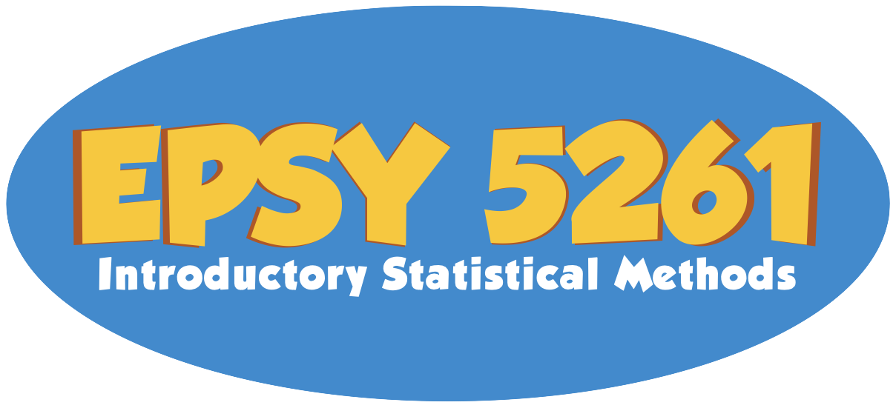

Fall 2024
Welcome to EPsy 5261: Introductory Statistical Methods
EPSY 5261 is designed to engage students in statistics by first building a conceptual understanding of statistics through the use of simulation methods and then learning about the more traditional methods, such as t-tests and regression. This course uses pedagogical principles that are founded in research, such as daily small group activities and discussion.
EPsy 5261 is a 3 credit course. It is expected that the academic work required of Graduate School and professional school students will exceed three hours per credit per week (see Expected Student Academic Work Policy). In my experience, it is typical for students to spend 10–15 hours a week on this course. As with every class, some students will spend more time than that on this course, while others will spend less time than that—it all depends on your prior experiences with statistics and computing. If you find yourself consistently spending more than 20 hours a week on the course, please make an appointment to see the instructor so that we can strategize about how to best optimize how you are devoting time to the course.
CACREP Standard(s) Covered in EPSY 5261 (for Counselor Ed. Students reference)
As a result of taking this course, Counselor Education students will:
- Learn about quantitative research methods (2.F.8.f)
- Understand how to use randomized control design in research (2.F.8.g)
- Learn statistical methods used in conducting research (2.F.8.h)
- Understand ways to analyze and use data in counseling (2.F.8.i)
- Identify ethical and culturally relevant strategies for conducting, interpreting, and reporting the results of research (2.F.8.j)
Audience and prerequisites
This course is intended for upper-level undergraduate and graduate students who have completed a high school algebra course. Although there are no formal prerequisites for this course, students should have familiarity with computers and technology (e.g., internet browsing, Microsoft Word, opening/saving/attaching files, etc.).
Attention undergraduates: As this is a graduate level course, it does not fulfill the Mathematical Thinking Liberal Education requirement. If you would like to take a statistics course in our department that fulfills that requirement, please consider EPSY 3264.
Course Goals, Objectives and Expectations
Upon completion of this course, students should (1) have an understanding of the foundational concepts of data, variation and inference; (2) be able to think critically about statistics used in popular magazines, newspapers, and journal articles; (3) be able to apply the knowledge gained in the course to analyze simple statistics used in research; and (4) be able to investigate research questions using a large data set, use a statistical software package to analyze the data, and appropriately report the conclusions from data study.
This is not a traditional class where you only come each day, listen, watch, take notes, and work entirely on your own. This class was developed under the inverted classroom model which has a lot of research-based support. The inverted classroom “inverts” the traditional instructor-centered classroom model and has you, the student, play a more active role in your learning. You will be required to first read about a topic yourself. Then, classroom time will be devoted to learning activities and discussions to further develop and help you understand the topic. Finally, you will solve problems on homework related to the topic.
This course makes extensive use of small group activities and large group discussions to solidify ideas and content, as well as to deepen your understanding of material encountered in the readings. Your learning experience is thus dependent–to some extent–on your classmates and vice versa. Because of this, it is essential that you not only attend class each day and participate in the activities and discussions, but that you show up prepared having completed the reading.
A Note on Inclusion and Respect
In this class, we will work together to develop a learning community that is inclusive and respectful, and where every student is supported in the learning process. As a class full of diverse individuals (reflected by differences in race, culture, age, religion, gender identity, sexual orientation, socioeconomic background, abilities, professional goals, and other social identities and life experiences) I expect that different students may need different things to support and promote their learning. The TAs and I will do everything we can to help with this, but as we only know what we know, we need you to communicate with us if things are not working for you or you need something we are not providing. I hope you all feel comfortable in helping to promote an inclusive classroom through respecting one another’s individual differences, speaking up, and challenging oppressive/problematic ideas. Finally, I look forward to learning from each of you and the experiences you bring to the class.
Classroom
- Tuesday/Thursday (1:00pm–2:15pm): Bruininks Hall 530B
Textbooks and Materials
The course textbook is available for free online. (There is no physical copy of the textbook, but you can print it out if that is a better option for you.)
- Required: Zieffler, A., & Legacy, C. (2023). An Introduction to Data Analysis.
Statistical Computing and Technology
This course is taught in an active learning classroom and you are strongly encouraged to bring a laptop to class on a daily basis.
Statistical computing is an integral part of statistical work, and subsequently, EPsy 5261. To support your learning in this area, this course will emphasize the use of R. R is a free software environment for statistical computing and graphics. (Information about how to download and use the software can be found in the textbook.) You are responsible for getting things to work on your computer. While it should be straightforward, each OS and computer has their quirks. I can try to help you with this if you are having trouble.
Technology Policy
The course uses technology on a regular basis during both instruction and assessments (e.g., homework assignments, exams, etc.). Student difficulty with obtaining or operating the various software programs and technologies—including printer trouble—will not be acceptable as an excuse for late work. Due to the variation in computer types and systems, the instructor or TA may not be able to assist in trouble shooting all problems you may have.
Course Requirements and Grading
Lab Assignments
There will be six lab assignments that together are worth 90% of your grade. You will need to complete the lab assignments outside of class (as homework) and submit them via email to the instructor and TA. You can access each of the lab assignment from the Assignments page of the website. For each lab assignment, you may choose to work alone or in a group. Working in a group may allow you to explore answers to a question with other students before submitting your lab assignment. Your lab assignment should be submitted via the course website before the end of the day that they are due (i.e., by 11:59 PM that day).
As a student of statistics, working through all of the lab assignments is an important piece in building a complete understanding of the concepts, as well as allowing you to practice doing statistics. As a way of connecting the work you are doing across all lab assignments, you will explore the same data set for each lab assignment.
Exit Tickets
Exit tickets will be given in the last 5 minutes of each class session. The “ticket” consists of a single question designed to assess your knowledge about or have you reflect on the day’s class content. These questions are to be completed individually. If you miss class you will not have the opportunity to complete the exit ticket for that day (see Policy for Missing Class and Making up Missed/Late Work for exceptions).
ChatGPT and Other AI
Artificial intelligence (AI) language models, such as ChatGPT, may be used to help you write R syntax with appropriate citation, but not for answering any of the questions on the assignments or exams. (If a question on the assignments/exams asks you to provide your syntax, you cannot use AI to produce that syntax!) If you are in doubt as to whether you are using AI language models appropriately in this course, I encourage you to discuss your situation with me or the TA. Examples of citing AI language models are available at: https://libguides.umn.edu/chatgpt. You are responsible for ensuring any syntax composed by AI is correct. Any student caught using AI on the assignments or exit tickets will be given a zero on that particular assignment/exit ticket and reported to the university’s Office for Community Standards for scholastic dishonesty.
Policy for Missing Class and Making up Missed/Late Work
Students are responsible for planning their schedules to avoid excessive conflicts with course requirements and must notify the instructor of unavoidable scheduling conflicts as early as possible. For circumstances where absences are unavoidable, accommodations for makeup work will be made according to University Policy. If you miss class:
- Email the instructor as soon as you know you will be missing class.
- Students are expected to obtain notes from a classmate of class material missed.
- Please note that I will not be recording class sessions at the request of individual students, nor will I be Zooming students in to the class. Although, if you can arrange it with a classmate, they can Zoom you in.
- If you are zooming in a classmate, please let the instructor know.
- If you will be gone the day an assignment is due, you will need to make arrangements with the instructor about when you will turn in the assignment.
- To make up an exit ticket for a missed class you need to email your completed in-class activity to the instructor in a timely manner (within 1 week unless you specifically get approval from the instructor). Once the instructor receives your in-class activity, they will email you the exit ticket question for that day.
If you do not communicate with the instructor and make arrangements for turning in work when you are absent, the assignment/exit ticket will receive a 0.
Evaluation of Student Performance
You will be evaluated on the basis of your performance on the assignments and exit tickets outlined above. Your course grade will be computed as a weighted average of:
| Type | Individual or Group? | Percent of Grade |
|---|---|---|
| Lab Assignments | Individual or Group | 90% |
| Exit Tickets | Individual | 10% |
This overall percentage in the class will then be converted to a final course grade using:
| Cutoff | Grade | Definition for Graduate Credit |
|---|---|---|
| 93%–100% | A | For exceptional work, well above the minimum criteria |
| 90%–92% | A– | For outstanding work, well above the minimum criteria |
| 87%–89% | B+ | For excellent work, significant above the minimum criteria |
| 83%–86% | B | For work above the minimum criteria |
| 80%–82% | B– | |
| 77%–79% | C+ | |
| 73%–76% | C | For work which meets the course requirements in every respect |
| 70%–72% | C– | |
| 63%–69% | D | Worthy of credit even though it fails to meet the course requirements |
| 0%–62% | F | Failed to meet minimum course requirements |
If you are taking the course S/N, the minimum criterion to receive an S is 80% (the equivalent of a B– letter grade). The S grade does not carry grade points and is not part of the GPA calculation, but the credits will count toward the student’s degree program if allowed by the college, campus, or program.
Any student who does not complete all lab assignments by the time the final lab assignment is due without making prior arrangements with the instructor will receive a grade of F/N.
Extra Credit Policy
Extra credit may be offered throughout the semester, but is not guaranteed.
Incomplete
Instructors may assign the registration symbol “I” for Incomplete if, at the time the incomplete is requested: (1) the student has successfully completed a substantial portion of the work of the course; and (2) due to extraordinary circumstances (as determined by the instructor), the student was prevented from completing the work of the course on time. The assignment of an “I” requires a written agreement with the student specifying the time and manner in which the student will complete the course requirements. For more information see Grading and Transcripts.
Accessing Course Grades
Shortly after the course, you may access your grades online at myU. Assignments will be handed back in class or during office hours. Uncollected assignments will be retained for six weeks after the course and then discarded.
Stress Management
Stress management is an important piece of the skill set needed for success in graduate school. Pet Away Worry & Stress (PAWS) is one of the many resources available to students. Find out more at https://boynton.umn.edu/paws.
You can follow Tilly the Therapy Chicken on Twitter (@TherapyChicken).
CEHD Policy on Recording Classes
All class sessions may be recorded by the instructor using the procedures in the CEHD Policy on Recording Classes, with or without prior notice. Students should assume that a class session is being recorded unless otherwise notified. No person (student or otherwise) may record a class without express written permission from the instructor or an authorized administrator implementing a disability accommodation. All permitted recordings are governed by this policy’s limits on distribution and redistribution of recordings.
Image Attribution
- The icon in the Inclusion Note was created by Freepik - Flaticon.
- The icon in the Technology Policy was created by Freepik - Flaticon.
- The icon of Tilly the Therapy Chicken in the Stress Managment note is used with permissin of the PAWS program.
- The icon in the CEHD Policy on Recording note was created by Hilmy Abiyyu A. - Flaticon.
- The icon in the Missing Class Policy was created by Freepik - Flaticon.